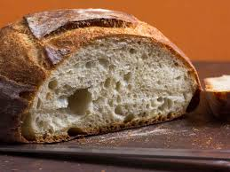

Bread

Bread is one of the most basic, but best foods humans have ever made.
Many cultures have bread as of of their staple items.
Ingrediants
- 4 cups Flour
- 1/2 cup warm Water
- 1 packet Yeast
- 1 tsp Salt
- 2 TBSP Honey
Instructions
- Mix honey and yeast into the warm water (100'F), cover, and let set for about
10 minutes, or until the yeast has started foaming.
- Add in the salt and flour - mix until no longer sticking to side of bowl
- Knead for 10-15 minutes, or until the dough is no longer sticky
- Set in greased bowl and cover. Let set for 1-2 hours, or until the douch has doubled in size
- Prehead oven to 400'F, put dough in pan
- Cook for 40 minutes
- Once out of the oven, put bread on cooling rack for an hour before cutting in
Return Home